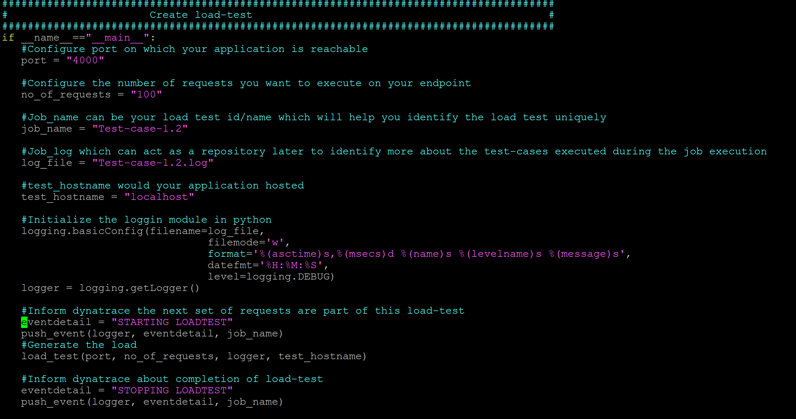
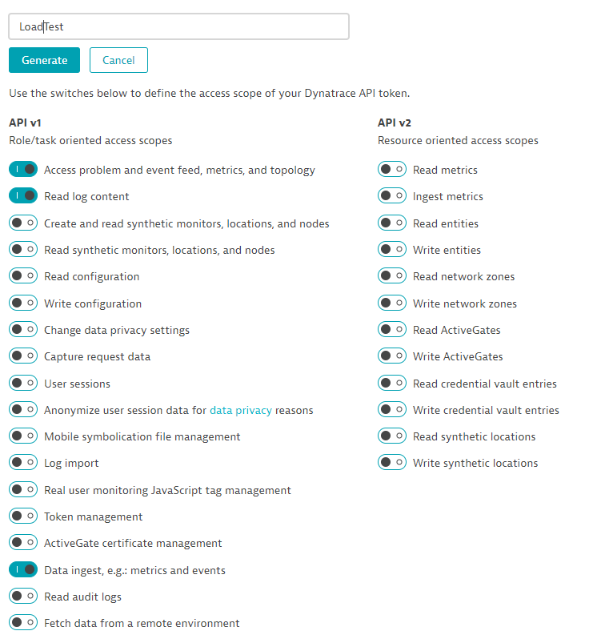
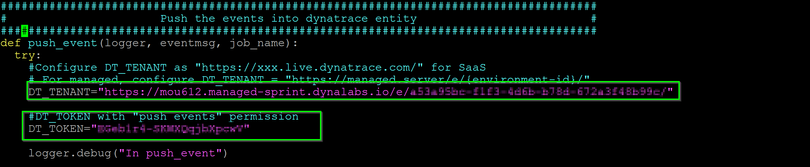
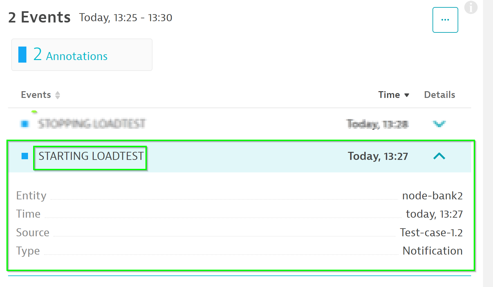
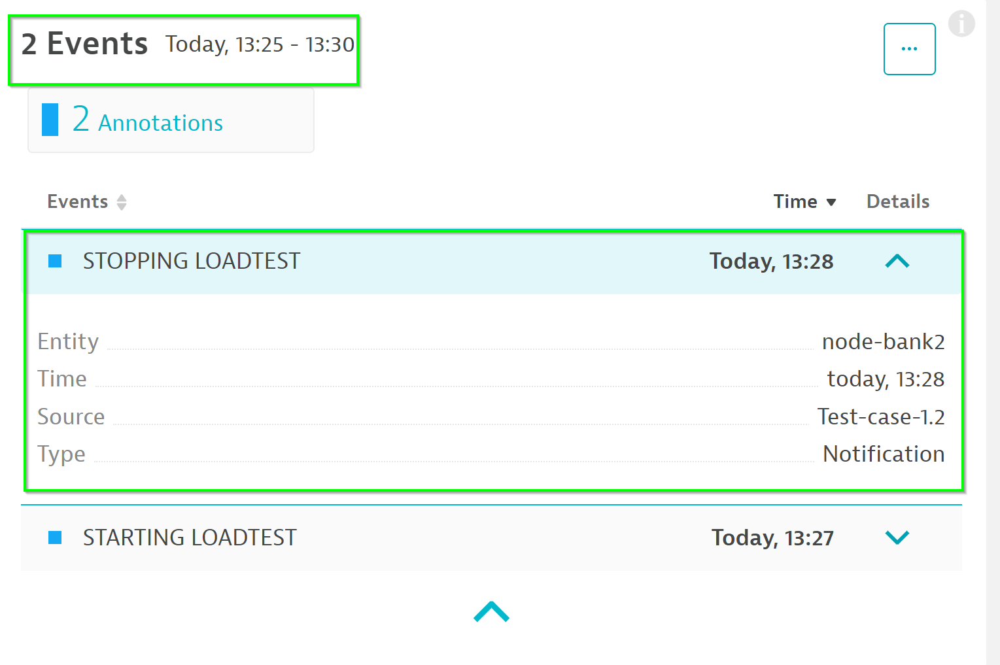
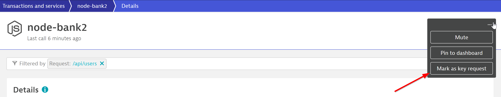
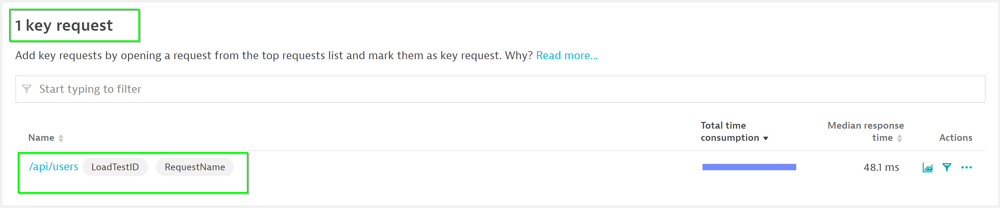
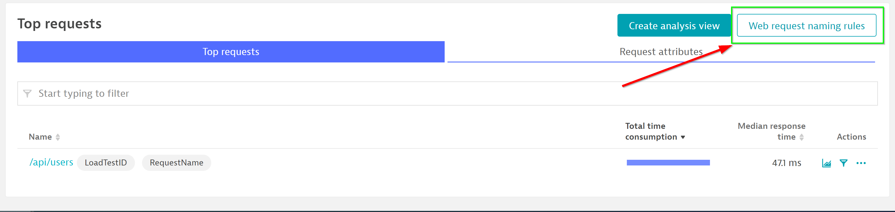
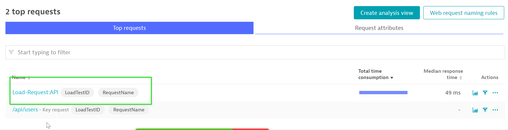
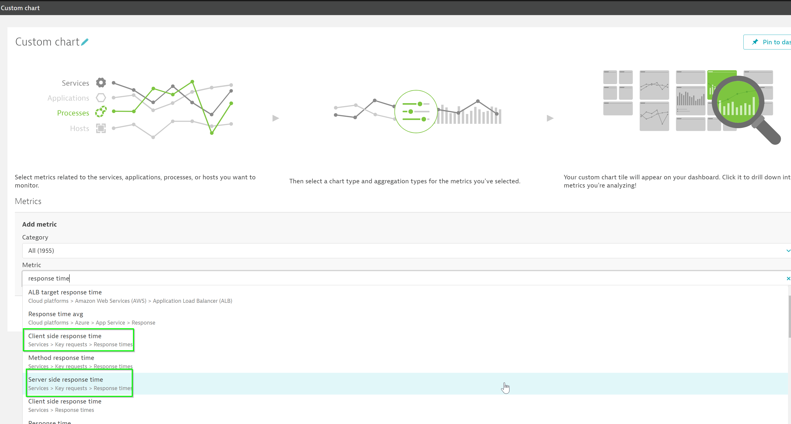

This lab is the second session of the AIOps Enablement Series for ANZ Bank. This track focuses on the Automate Feedback, which relates to how you could integate Dynatrace with load testing tools to create Performance as a service.

What You'll Learn
- Creating Manual Tags in Dynatrace to define unique entity
- Load test web requests renaming
- Compare features to differentiate load test / actual requests
- Mark Load test requests as Key Requests
- Create dashboards for load-requests basic tiles
- Response time
- Failure rates
- Database performance
Other useful commands:
- To view all docker containers:
docker ps -a - To view the downloaded images on localhost:
docker images - To remove a particular image:
docker rmi <IMAGE-NAME> - To stop a docker:
docker stop <CONTAINER-ID> - To remove a docker:
docker rm <CONTAINER-ID> - To run a docker in interactive bash:
docker run -it <CONTAINER> /bin/bash - To delete all the unused images:
docker system prune -a -f - To pull a particular image:
docker pull <docker-image>
This lab is the second session of the AIOps Enablement Series for ANZ Bank. Please refer back to previous steps below to setup your environment.
Resuming ⏯ from your Session 1
As part of the training, you might have just restarted your ec2-instance. If so, follow the steps below:
By integrating Dynatrace into your existing load testing process, you can stop broken builds in your delivery pipeline earlier. Tagging is a powerful mechanism and should be used carefully and in a meaningful way. To guide you towards this end, we provide you with specific recommendations and best practices.
Defining a Unique Entity

In Dynatrace, on the left menu bar, go to Transactions and services > node-bank2 and follow the steps below:
- Dropdown Properties and tags
- Click on Add tag
- Name the new Tag
My_service

Official Dynatrace documentation could be found here
Trigger Load with Python script
As per the last lab we have written a Python script to automate the load tests for JMeter. We will now edit it to push events into Dynatrace. Within the shell terminal, run the following command to edit the Python script.
cd /home/ubuntu/ACM1Workshop/additional_resources/app_docker/scripts/
vim smoke-test.py
Within the text editor, scroll to the bottom. Uncomment the script so as to match the below.
#Inform dynatrace the next set of requests are part of this load-test
eventdetail = "STARTING LOADTEST"
push_event(logger, eventdetail, job_name)
#Generate the load
load_test(port, no_of_requests, logger, test_hostname)
#Inform dynatrace about completion of load-test
eventdetail = "STOPPING LOADTEST"
push_event(logger, eventdetail, job_name)
logging.shutdown()
Screenshot of edited script
Replacing Dynatrace Variables
Within the middle section of the script, append the values of DT_TENANT and DT_TOKEN
To get your DT_TENANT, go to the Web Browser and extract the URL path as per below.
EXAMPLE URL https://mou612.managed-sprint.dynalabs.io/e/DT-TENANT/

To get your DT_TOKEN, go to Settings > Integration > Dynatrace API > Generate Token and follow the below:
- Create a token with LoadTest
- Toggle Data ingest, eg: metrics and events
- Click on Generate
- Clck on Copy

Back in your shell terminal, replace the DT_TENANT and DT_TOKEN. Your script should look like the below.

Save the text editing session with command :wq
Run the script with command python3 smoke-test.py
Check Load Test Events
The script will append load test events within Dynatrace which will add additional insights for our DAVIS AI to use.
Note the Start events and Stop events


Mark Requests as Key Requests
In Dynatrace, on the left menu bar, go to Transactions and services > node-bank2
Click on View dynamic requests and use /api/users within the filter bar
Note that the Top requests has now been filtered with /api/users

Click on the ... button on the top right and choose Mark as key request

Notice that the /api/users has been marked as a key request.

Web Requests Naming Rules
Dynatrace automatically provides names, but they don't enable you to quickly identify where an application or service belongs to. To achieve this, it's recommended that you use service naming rules and process group naming rules. This can be done in Dynatrace using metadata imported from the monitored applications.
You can use Dynatrace Naming Rules to differentiate requests

- Click on Web Request naming rules
- Click on Add rule undesr Request naming rules
- Use
Load-Request:{RequestAttribute:RequestName}under Naming Pattern - Choose Request attribute
RequestNameexists under Condition(s) - Click on Save

With the naming rule now applied, you would see a newly created request.

Populate requests
Within the SSH Terminal, run the Python script command again python3 smoke-test.py to populate requests.
There are many different ways to analyze the data. Your approach should be based on the type of performance analysis you want to do (for example, crashes, resource and performance hotspots, or scalability issues).

Official Dynatrace Documentation here
Dynatrace provides versatile dashboarding and charting mechanisms. You can create dashboards to reflect load test performance.

Creating custom charts
In Dynatrace, on the left menu bar, go to Create custom chart
Choose and chart Client side response time and Server side response time metrics

You can filter on LoadTestID and chart only requests with that attribute.

We hope you enjoyed this lab and found it useful. We would love your feedback!